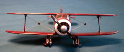
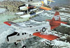
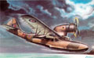
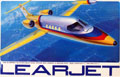
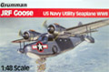
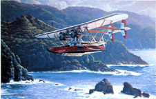
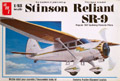
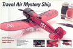

|
This is a blast from the past. This is the 1/48 scale ESCI/Ertl Beechcraft G17S Staggerwing. This is the first real 
corporate commuter aircraft with its beautiful lines, enclosed cabin
and retractable landing gear. For a complete construction review of this
model click here... Beechcraft G17S Staggerwing
9/5/03
This is a difficult aircraft to categorize, is it civilian or military? Nearly half of all produced 
went to military service for utility and Search and Rescue operations.
In service around the world since 1952 and still highly sought after
today due to it’s ruggedness and reliability. Originally designated the
‘King Beaver’, from Hobbycraft, this is the 1/48 scale De Havilland
Canada DHC-3 Otter
3/24/04
In 1933 the de Havilland Company designed the DH.89 Dragon Six as a replacement for its current short haul small passenger plane the DH.84 and styled it after their larger four engine DH.86 Express. With the outbreak of hostilities in 1939 the DH.89 was impressed by the British Military as the de Havilland Dominie. After the war it returned to civilian use and continues to fly today. New from Isradecal here is the 1/48 de Havilland DH.89A Dragon Rapide. 9/1/2012
Design work began in 1924 on what was to be one of the largest luxury aircraft of the century and also one of the largest
failures in aviation engineering. Claudius Dornier did not want to risk
the success of this project with unproven ‘modern’ technology and this
is exactly what caused its ultimate failure. With three decks of opulent
luxury and twelve engines driving it this aircraft was indeed a sight
to behold. Its outdated design and lack of weight control robbed it of
its power and range. Take a look at the 1/144 scale Matchbox offering of
the Dornier Do-X. 10/16/05 Construction completed 5/26/2009
I believe that this aircraft designed and produced by Douglas in the 1930s was a milestone in aviation history. This was the
aircraft that really made passenger air travel practical. It was not
the largest or the fastest aircraft at the time but its combination of
economy and reliability resulted in an average cost of four cents per
mile to operate verses the then standard of seven cents per mile.
Currently out of production this is the 1/48 Revell-Monogram Douglas DC-3.
11/6/05
This cute little amphibian was originally developed in 1935 by Fairchild to service the Pan American feeder 
routes in South America. Only eleven aircraft were ever manufactured
but they all lead very interesting lives. Some performed liaison duties
while others were used for SAR functions. The model itself was
manufactured by two companies and other than some details is, in truth,
the same kit. Here I take a look at the Azure boxing (with resin
details) of the Fairchild F-91.
12/4/05
Designed from a Swiss made jet fighter this small passenger jet went into production as the Lear 23 and became a pioneer 
in the entirely new field of business and personal jet aviation. They
made small passenger jets affordable for corporations and some private
individuals and opened an entirely new market that has been populated by
several manufactures of small business jets. Lets take a break for
military models for a moment and check out this hot little corporate
transporter, the Gates Learjet 35/36.
1/22/06
Designed in 1936 and manufactured from 1937 until 1945 this amazing little amphibious seaplane acted as the primary 
utility plane for the Navy and provided a rugged and dependable means
for many private airlines to service out-of-the-way areas around the
world. Still in service in the twenty-first century, here is the new
Czech Model 1/48 scale Grumman JRF Goose; 1/21/04
Construction completed 3/22/04
I just love Sikorsky aircraft. I see Igor Sikorsky as one of the truly great developers of commercial and private aircraft in 
twentieth century, not to mention his work with helicopters. Here is
Czech Master’s resin 1/72 scale S-38. The S-38 and S-39 flying boats
captured America’s imagination and captured mine also. For a complete
construction review of this model click here...Sikorsky S-38
Updated 12/14/03
The Shavrov Sh-2 served throughout the Soviet Union as a utility transport, for liaison, and as a trainer, and for many years
was used on fishery protection duties and frontier patrol work. Series
production began in 1934 and was terminated two years later in 1936. The
aircraft was so popular with pilots that in 1939 production was resumed
and over 700 examples were ultimately manufactured. During the winter
months it could be equipped with skis and was found to be not only of
simple construction but very reliable. Join me in the construction of
this little Shavrov Sh-2 aerial ambulance. 11/17/07 Construction completed 11/17/07
This baby is a ‘Looker’ with style. Built to go the distance with grace and 
elegance. We have to get into the ‘way back’ machine to take a look at
this 1970s kit of Eddie Stinson’s aviation legend – the Stinson SR-9
Reliant. Produced and distributed by AMT this is not up to 21st century
standards of modeling but it is a good place to start with an aircraft
that is a shining example of pride and excellence in craftsmanship. This
is the SR-9 Reliant
2/19/04
Designed by Walter Beech and Herbert Rawdon for the 1929 National Air Race in Cleveland Ohio this sweet 
little racer really put the hurt on the U.S. Army and the U.S. Navy
when it soundly thrashed both of their front line combat interceptors.
Only six of these were ever built but they helped to change the face of
aviation around the world. An excellent beginners kit and good for the
accomplished modeler as well, from Testors Corp., this is the 1/48 scaleTravel Air Mystery Ship.
8/6/05
|
|